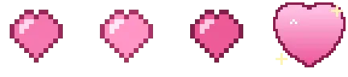
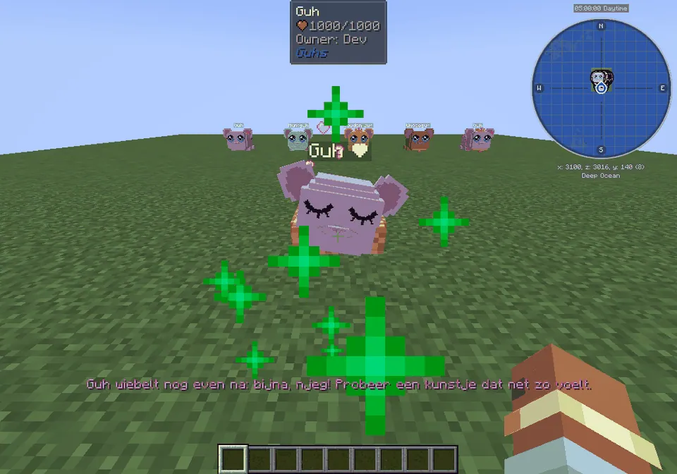
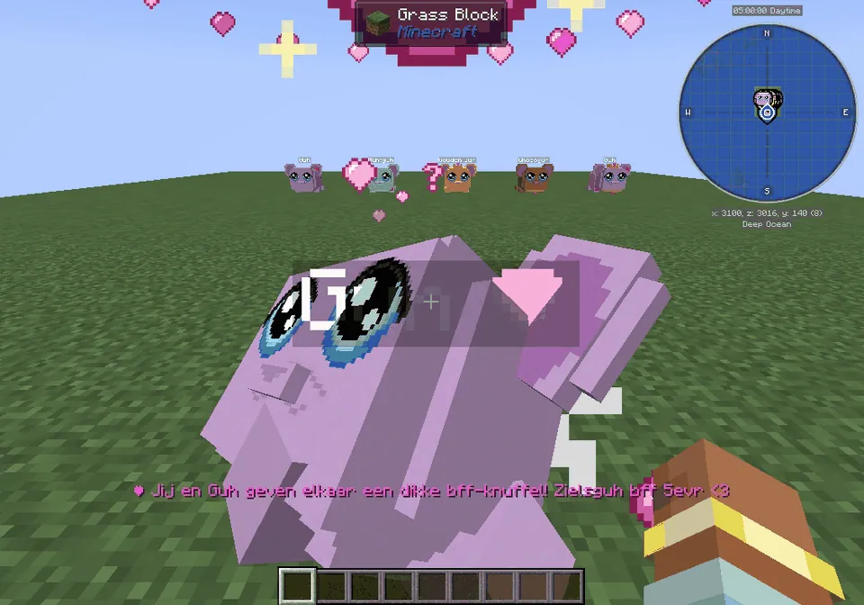
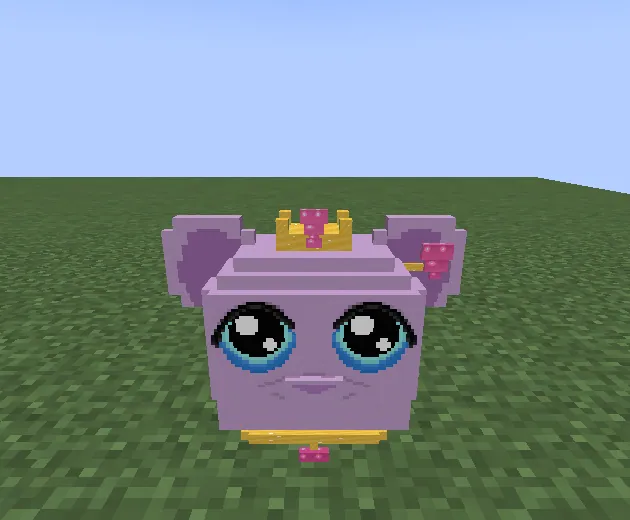

The heart meter: the more you do with your guh, the more hearts. Hearts never go down, and at the top level your guh becomes your soul guh.
De hartjesmeter: hoe meer je met je guh doet, hoe meer hartjes. Hartjes gaan nooit omlaag, en bij het hoogste niveau wordt je guh je zielsguh.
Hearts that never go downHartjes die nooit omlaag gaan
Every guh you tame starts a hartjesmeter with you (guhs you already had count too). Everything you do together fills it: feed it a snack, tap it for an aaitje, give it a big Knuffelen! from its menu, play, travel, let it do chores. Pink hearts float up and the bar above your hotbar says +2 ♥. Hearts never go down, not ever: no punishment, no hunger, no sulking. There is a little limit per day for every source, so a guh doesn't get spoilt (njeg), and a blij guh (see favorietjes) gets 1.5× as many.
Elke guh die je temt begint een hartjesmeter met jou (guhs die je al had tellen ook mee). Alles wat je samen doet vult hem: geef hem een snackje, tik hem aan voor een aaitje, geef hem een dikke Knuffelen! uit zijn menu, speel, reis, laat hem klusjes doen. Er zweven roze hartjes omhoog en boven je hotbar staat +2 ♥. Hartjes gaan nooit omlaag, nooit: geen straf, geen honger, geen gemok. Per bron is er een klein daglimiet, zodat een guh niet verwend raakt (njeg), en een blije guh (zie favorietjes) krijgt er 1,5× zoveel.
| LevelNiveau | HeartsHartjes | You unlockJe krijgt |
|---|---|---|
| lieve vadsjes van elkaar | 100 | the hartjesspeldje (a heart pin for the ear) and the emote Hartjeshet hartjesspeldje (een hartjesspeld voor aan het oor) en de emote Hartjes |
| mega lieve vadsjes van elkaar | 600 | the knuffeltruitje and the emote Knuffeldansjehet knuffeltruitje en de emote Knuffeldansje |
| zielsguh bff 5evr <3 | 2000 | the zielskroontje, the exclusive gouden hartjes-halsbandje and the Bff-knuffelhet zielskroontje, het exclusieve gouden hartjes-halsbandje en de Bff-knuffel |
From left to right: hartjesspeldje, knuffeltruitje, zielskroontje with the gouden hartjes-halsbandje. The clothes are unlocked for all your guhs (Kleding source Hartjes met je guh); the emotes are unlocked in the Emotes menu of every guh.
Van links naar rechts: hartjesspeldje, knuffeltruitje, zielskroontje met het gouden hartjes-halsbandje. De kleertjes zijn ontgrendeld voor al je guhs (Kleding-bron Hartjes met je guh); de emotes gaan open in het Emotes-menu van elke guh.

Where hearts come fromWaar hartjes vandaan komen
| WhatWat | HeartsHartjes | Max per dayMax per dag |
|---|---|---|
| Feeding a snackEen snackje geven | 2 | 40 |
| Petting (a short tap)Aaien (kort tikken) | 1 | 20 |
| Knuffelen! in the guh menuKnuffelen! in het guhmenu | 5 | 50 |
| Time together (per minute within 16 blocks)Samen zijn (per minuut binnen 16 blokken) | 1 | 60 |
| Travelling togetherSamen op reis | 1 | 50 |
| A chore from its huisjeEen klusje vanuit zijn huisje | 2 | 40 |
| A minigame togetherSamen een minigame | 15 | 100 |
| A record while it watchesEen record terwijl hij kijkt | 10 | 50 |
| Discovering a favouriteEen favorietje ontdekken | 50 | 400 |
| A favourite againWeer een favorietje | 5 | 30 |
| Playing with a toySpelen met speelgoed | 3 | 30 |
| With its guh friendsMet zijn guh-vriendjes | 2 | 20 |
Snacks are 42 treats: kaas knabbels, cupcakes, macarons, kaasijsjes, koekjes, tompoucen, vadsdonuts, sweet berries, an apple... (only you, the owner, can feed your guh). A level-up gives a big heart, a jingle and a line in the chat; when you were offline, you hear it at your next login.
Snackjes zijn 42 lekkernijen: kaasknabbels, cupcakes, macarons, kaasijsjes, koekjes, tompoucen, vadsdonuts, zoete bessen, een appel... (alleen jij, de baas, kunt je guh voeren). Een nieuw niveau geeft een groot hart, een deuntje en een regel in de chat; was je offline, dan hoor je het bij je volgende login.
The zielsguhDe zielsguh

A heart after its nameEen hartje achter zijn naam
A zielsguh has a twinkling pink heart after its name and now and then sparkling hearts float off it.Een zielsguh heeft een fonkelend roze hartje achter zijn naam, en af en toe zweven er glinsterhartjes van hem af.

The bff-knuffelDe bff-knuffel
Pick Bff-knuffel in the Emotes menu while you stand close: your guh stands on its hind legs, hops in front of you and you hug, with a big beating heart above you both.Kies Bff-knuffel in het Emotes-menu terwijl je vlakbij staat: je guh gaat op zijn achterpootjes staan, huppelt voor je en jullie knuffelen, met een groot kloppend hart boven jullie.

Crown and golden collarKroontje en gouden halsbandje
The zielskroontje and the gouden hartjes-halsbandje together. VAHOEG!Het zielskroontje en het gouden hartjes-halsbandje samen. VAHOEG!